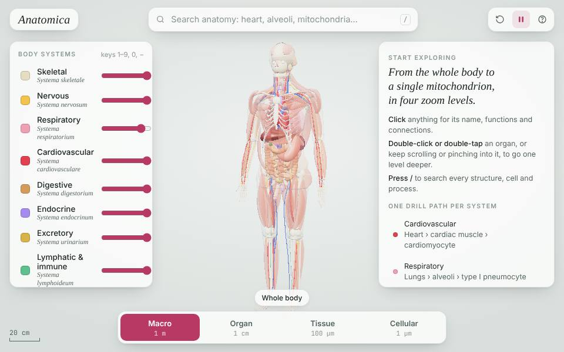
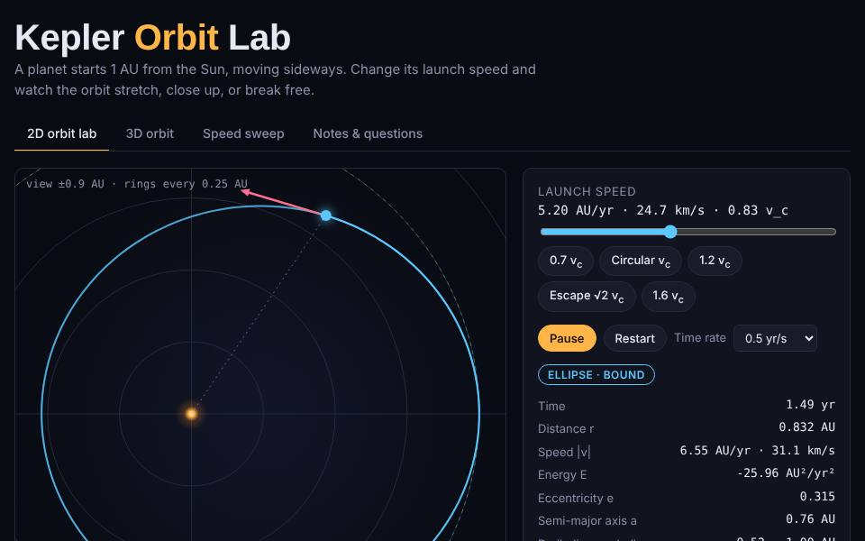
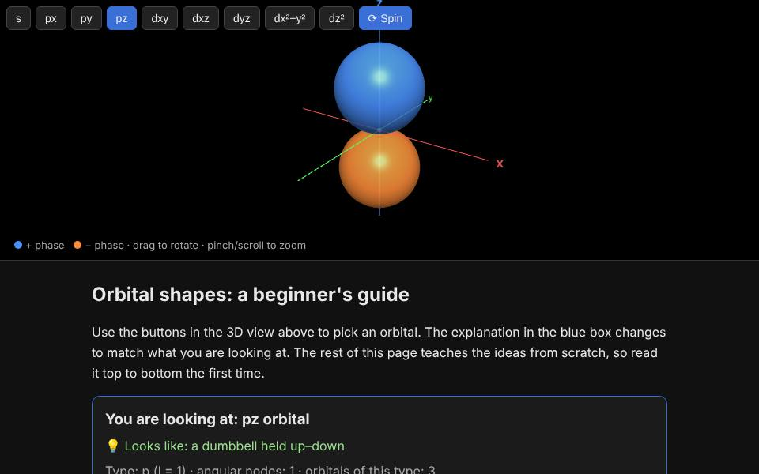
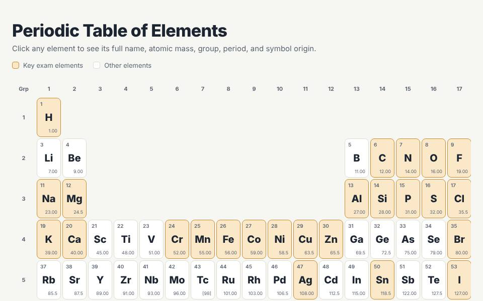

Study Simulations
Interactive models for biology, physics and chemistry. Pick one to explore; each runs in the browser and works on phones.

Biology
Anatomica
Explore the human body in 3D, from whole organ systems down to tissues and a single mitochondrion.
Open →
Physics
Kepler Orbit Lab
Change a planet's launch speed and watch its orbit stretch, close up or break free. Includes a 3D view and questions.
Open →
Chemistry
Orbital Shapes 3D
Rotate the s, p and d orbitals in 3D, with a beginner's guide to what each shape means.
Open →
Chemistry
Periodic Table
Tap any element for its name, atomic mass, group, period and where its symbol comes from. Key exam elements are highlighted.
Open →